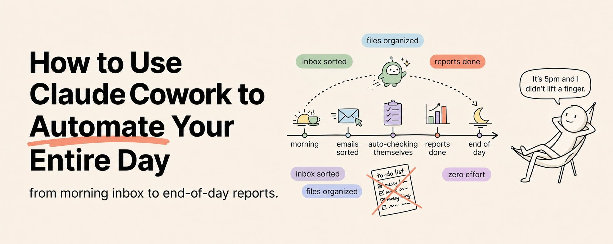

A scoped local worker that can read approved folders, process files, use connected services, and run scheduled workflows. The useful idea is turning recurring knowledge-work routines into explicit, reviewable automations.

The workflow starts with local permissions. Instead of chatting with a model in isolation, the assistant is granted access to selected folders and connected services, then asked to perform concrete work on real artifacts.
| Layer | Examples | Risk Control |
|---|---|---|
| Local files | Read PDFs, organize downloads, fill templates | Start with narrow folders and explicit output paths |
| Connectors | Gmail, Calendar, Drive, Slack, Notion | Prefer draft/review steps before sending or posting |
| Scheduled tasks | Morning briefing, weekly cleanup, monthly reports | Use stable prompts and review checkpoints |
| Remote dispatch | Trigger laptop workflows from a phone | Keep destructive actions out of mobile-triggered flows |
| Pattern | Input | Output |
|---|---|---|
| Morning briefing | Overnight email, calendar, Slack mentions, project notes | Daily briefing document |
| End-of-day closeout | Modified files, sent emails, Slack threads | Accomplishments, pending items, tomorrow priorities |
| Invoice processor | PDFs in an incoming invoice folder | Spreadsheet with vendor, amount, due date, line items, and flags |
| Meeting prep | Tomorrow's calendar, prior notes, email threads | One-page prep document per meeting |
| Client report pipeline | Project notes, Slack messages, Drive updates | Status report, draft email, and channel summary |
| Reading batch processor | URL list or article folder | Summaries with key argument, insights, actions, and relevance rating |
The common shape is: gather context, extract structure, transform it into a useful artifact, save it somewhere predictable, and ask for human review before high-impact actions.
Read PDFs in /Invoices/Incoming.
For each invoice, extract vendor, invoice number, amount, due date, and line items.
Create /Invoices/Summary/YYYY-MM invoices.csv.
Flag invoices due within 7 days.
Do not delete, move, email, or pay anything.The clipping is a social-media course-style source, so treat product names, availability, and exact connector behavior as claims to verify in the actual app before depending on them. The durable idea is product-independent: scoped computer-use agents are useful when the task is repetitive, file-heavy, and easy to review.
The safe operating model is narrow access, draft-first behavior, visible artifacts, and periodic review of prompts and outputs.